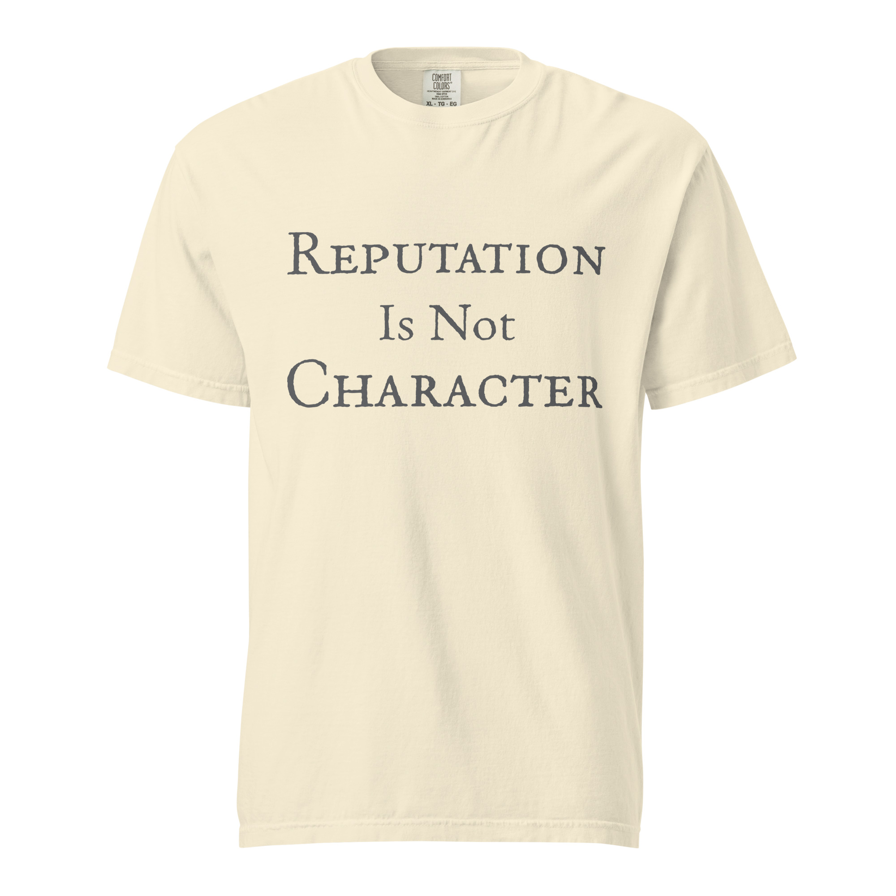

Reputation Is Not Character
A restrained statement tee for people who care more about integrity than applause.
Character
Integrity when no one is watching.
Reputation is what people say about you. Character is what remains when there is no audience to impress and no applause to manage.
That distinction matters because image can be built, polished, and defended. Character cannot. It shows itself in habits, decisions, restraint, and conduct over time.
Angry Abe treats character as a moral standard, not a branding choice. If your words and your behavior separate under pressure, character is what tells the truth.
Lincoln lived under relentless criticism, rumor, and political attack. What gave him lasting stature was not public approval in the moment. It was steadiness of principle.
He understood that reputation moves with noise, but character is measured by what a person actually practices. That is why character matters more than presentation. It survives the collapse of image.
In Angry Abe terms, the question is plain: are you managing perception, or are you living with integrity?
Current Shirt

A restrained statement tee for people who care more about integrity than applause.
This design is a reminder that image can be curated, but integrity has to be practiced. The point is not provocation. It is clarity.
The statement lands because it names a distinction many people prefer to blur. Character is proven through conduct, not through reputation management.